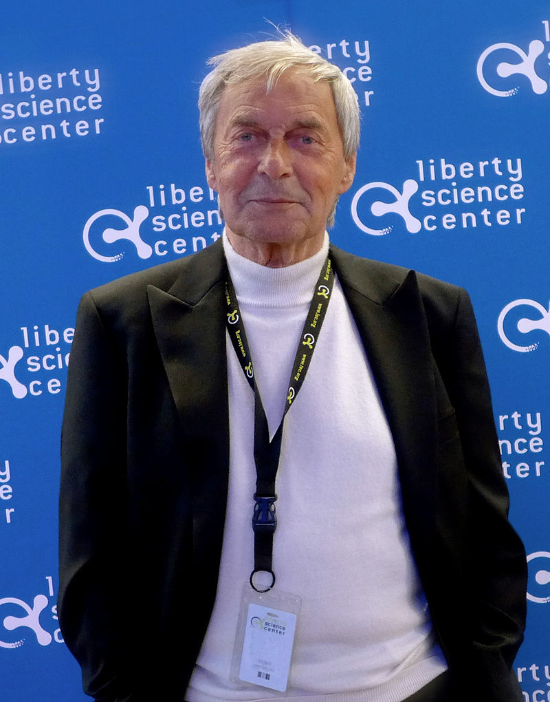

Создатель Кубик Рубика
Родился в Будапеште во время Второй мировой войны. Его отец Эрнё Рубик-старший был авиаинженером. В 1967 году окончил инженерный факультет Будапештского университета технологии, по специальности инженер-строитель, продолжил обучение на скульптора и дизайнера.В начале 1980-х стал редактором журнала игр и головоломок. В 1983 году основал собственную студию Rubik Studio, которая занималась дизайном мебели и разработкой головоломок.В октябре 1983 года объявил, что передаёт государству 7 миллионов форинтов на организацию и деятельность специального фонда содействия внедрению изобретений граждан Венгрии. В роли гаранта фонда выступил Государственный банк страны.В 1987 году получил звание профессора. В академии был создан международный фонд Рубика для поддержки особенно талантливых молодых изобретателей.В настоящее время в основном участвует в разработке видеоигр, пишет статьи по архитектуре и возглавляет студию Рубика.
